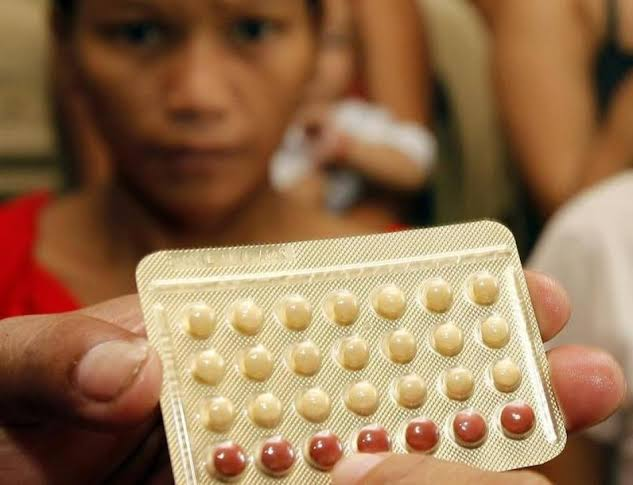

Women's reproductive health is crucial for personal well-being and national socio-economic development in the Philippines. However, inequalities persist, with poorer women experiencing higher rates of teenage pregnancy and having more children, which perpetuates poverty. Despite improvements in family planning access, such as the decrease in unmet need from 30% in 1993 to 17% in 2017, a fertility gap remains, signaling unfulfilled reproductive choices. Reproductive health extends beyond contraception to include menstrual care, cancer screening, disease prevention, sex education, and mental health which are critical for empowerment and economic contribution.
Importance of Women's Reproductive Health


The Philippines faces a shortage of over 220,000 healthcare workers, crippling reproductive health services. By 2022, only 22% of registered workers from 2018 remained active. COVID-19 worsened the crisis with unpaid benefits and poor working conditions. Reproductive health education is poorly implemented due to underfunding, lack of trained teachers, and weak monitoring. Teenage pregnancy remains high—62,510 minors gave birth in 2019, including 2,411 aged 10 to 14. Abortion is criminalized, pushing women to unsafe procedures. In 2015, there were 610,000 induced abortions, over 100,000 hospitalizations, and more than 1,000 deaths. Women seeking post-abortion care often face abuse and discrimination. Religious influence continues to block full implementation of reproductive health laws, limiting access and progress.